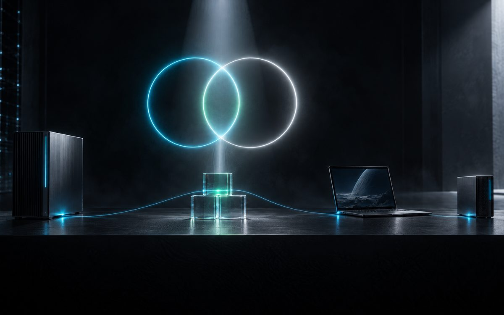
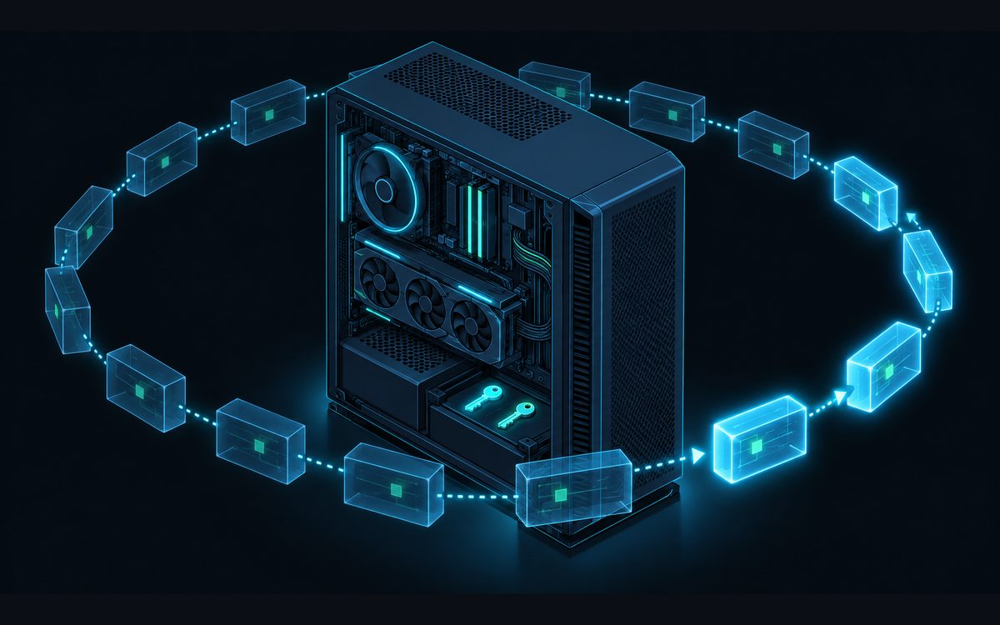
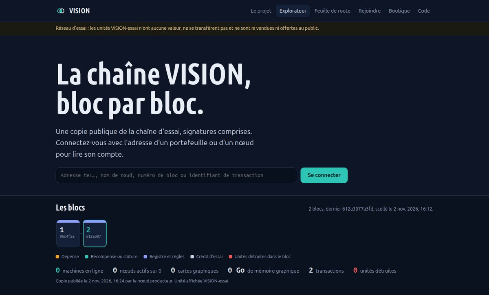
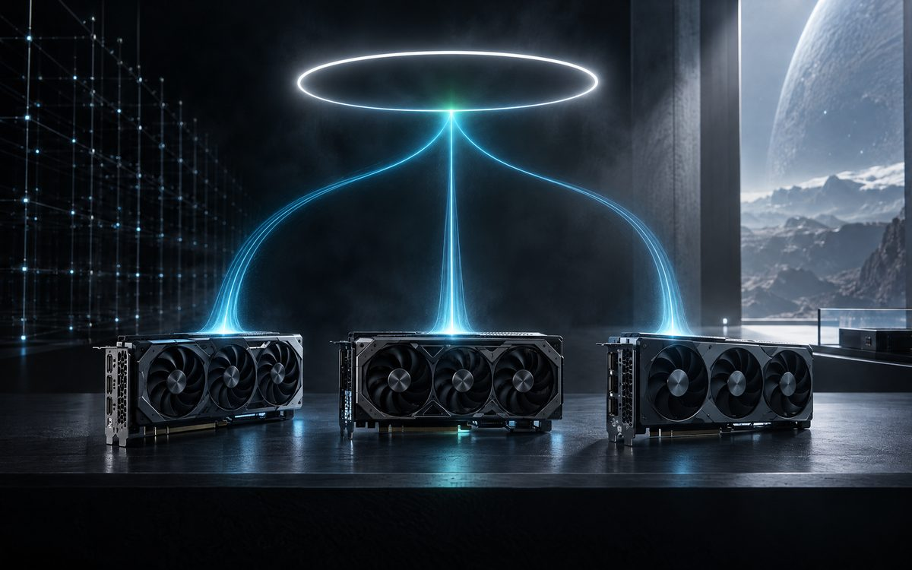

Le travail d'une machine ne compte qu'après le regard d'une autre.
VISION relie des machines équipées de cartes graphiques pour faire tourner l'IA en local. Chacune installe un nœud et son portefeuille ; chaque calcul est rejoué et signé par une autre machine avant d'être récompensé.
La chaîne, bloc par bloc
Lecture de la copie publique…
Ce qui tourne déjà
Tout ce qui suit fonctionne sur nos machines depuis le 2 novembre 2026, sur une chaîne d'essai.
- Le nœud
- Il s'installe en un seul fichier, sans droits d'administrateur. À la première ouverture, il crée deux clés sur la machine, une pour le nœud et une pour le portefeuille ; elles ne la quittent jamais. Il rejoue toute la chaîne depuis le bloc 0 et refuse ce qui ne se vérifie pas.
- Le portefeuille
- Servi uniquement sur la machine, il montre le solde, l'adresse, les dépenses signées, les blocs, le réseau et la puissance partagée. On s'y connecte avec une adresse pour lire un compte tel que la chaîne le connaît.
- Les unités VISION-essai
- Un service rendu par le réseau se règle par une dépense signée par le portefeuille. 20 % des unités sont détruites, 80 % reviennent à la réserve qui récompense les machines. Aucune instruction ne transfère des unités d'un compte à un autre.
- Le partage de puissance
- Chaque nœud annonce lui-même sa machine : cartes, mémoire, cœurs, charge. Les annonces sont vérifiées puis additionnées, et l'explorateur montre la puissance réellement en ligne.
- La récompense
- Un travail compte quand une autre machine l'a rejoué et a signé un reçu. Chaque semaine, le budget de l'époque se partage au prorata des points ; ce budget est divisé par deux chaque année. C'est une règle de calcul, pas une promesse de gain : les unités n'ont aucune valeur. Pour l'instant, les récompenses restent calculées en simulation.
- L'explorateur
- Les blocs, les transactions, les nœuds et les soldes sont publiés ici avec leurs signatures. Un nœud lit cette copie et la rejoue lui-même : elle ne peut rien lui imposer.
Comment ça marche, pas à pas
De l'installation à la récompense : ce que fait chaque machine, et ce que vous pouvez vérifier vous-même.
-

Illustration générée par IA (Mistral). Des machines ordinaires, reliées
Un PC de bureau ou un portable sous Linux, avec ou sans carte graphique, suffit. Chaque machine installe un nœud : c'est lui qui garde une copie de la chaîne, parle aux autres nœuds et sert le portefeuille.
Une seule machine, le producteur, signe aujourd'hui les blocs. Les autres ne lui font pas confiance pour autant : elles rejouent tout ce qu'il publie.
-

Illustration générée par IA (Manus). Installer : un fichier, deux clés qui ne sortent jamais
L'installateur est un script shell suivi d'une archive du code de ce dépôt. Il s'installe dans votre dossier personnel, sans droits d'administrateur, et crée deux clés ed25519 : une pour le nœud, une pour le portefeuille. Elles restent dans
~/.local/share/vision-noeud.Le portefeuille n'est servi que sur la machine elle-même, à l'adresse
http://127.0.0.1:8861/. Seul votre compte peut signer : un secret local, lisible par vous seul, est exigé, et l'adresse seule donne une lecture. -

Capture réelle de l'explorateur, chaîne publique vision-essai. Rejouer toute la chaîne avant d'y croire
Le nœud récupère la chaîne chez ses pairs du réseau local, ou sur la copie publique de ce site. Il la rejoue depuis le bloc 0. Pour chaque bloc, il vérifie :
- la hauteur et l'empreinte du bloc précédent ;
- la racine de Merkle des transactions ;
- l'empreinte des soldes après le bloc ;
- la signature du producteur, avec la clé épinglée dans l'installateur.
Une copie ou un pair qui triche est refusé au premier écart. Un miroir ne peut rien imposer à un nœud.
-

Illustration générée par IA (Mistral). Mettre la puissance en commun
Chaque nœud annonce sa machine : cartes graphiques, mémoire, cœurs, charge. L'annonce est signée par la clé du nœud, vérifiée, puis additionnée aux autres. L'explorateur ne compte une machine en ligne que si elle a répondu dans les deux dernières minutes.
VISION n'exécute rien lui-même. Les modèles d'IA tournent sur les machines ; VISION recense la puissance disponible et inscrit les preuves du travail fait.
-
Illustration générée par IA (Manus). Le travail d'une machine, vérifié par une autre
Quand une machine termine une étape de travail, une autre machine la rejoue et signe un reçu : réussi, échoué ou indéterminé. Sans reçu, pas de point.
- Points de travail : les secondes de l'étape validée, doublées si le résultat est retrouvé à l'identique.
- Points de vérification : un point par reçu signé, pour la machine qui a vérifié.
- À la clôture de l'époque, le budget se partage au prorata des points ; le reliquat reste en réserve.
La vérification des reçus s'appuie sur un module du producteur qui n'est pas publié ici. Tant que cette vérification n'est pas ouverte et prouvée, les récompenses restent en simulation.
-
Vérifier sans nous croire
L'explorateur montre les blocs, les transactions, les nœuds et les comptes, signatures comprises. Pour aller plus loin, le dépôt fournit un vérificateur indépendant qui rejoue toute la chaîne sans utiliser le code du nœud. Il ne demande que Python 3.10 et
ssh-keygen:git clone https://github.com/Turbo31150/vision && cd vision python3 outils/verifier-chaine docs/chaine --cle-origine "ssh-ed25519 AAAA…"
Sans
--cle-origine, la clé vient du même site que les blocs : cela prouve que la chaîne est cohérente, pas qui l'a signée. Demandez la clé du producteur par un autre canal.
Les illustrations sont générées par IA et ne montrent pas de vraies machines. Les captures de l'explorateur sont réelles.
Le circuit d'une unité
Quatre étapes, toutes inscrites dans la chaîne.
- CréditéePar des factures d'essai seulement : aucune somme n'est encaissée.
- DépenséeUne réponse d'un modèle, une lecture d'image : le portefeuille signe la dépense, le producteur la scelle dans un bloc.
- Détruite à 20 %Le reste retourne à la réserve d'usage. Les unités en circulation ne font que diminuer.
- Rendue aux machinesÀ la clôture de l'époque, le mercredi à 12:00 UTC, la réserve récompense le travail vérifié et les vérifications signées.
Le portefeuille, connecté par adresse
On saisit l'adresse d'un portefeuille ou d'un nœud, et la chaîne dit tout ce qu'elle sait de lui. Seule la clé gardée sur la machine peut signer une dépense.
Le parc en ce moment
Chaque nœud annonce lui-même sa machine. Un nœud n'est compté en ligne que s'il a répondu dans les deux dernières minutes.
Lecture du parc…
Feuille de route
Ce qui est fait se vérifie dans l'explorateur ou dans le code. Le reste est daté quand une date existe, conditionnel sinon.
-
Phase 0, 2 novembre 2026 au matinFait
Les fondations de la confiance
- Chaque événement important est signé par la machine qui l'a produit.
- Un grand livre scellé, que trois témoins répliquent. Pour l'instant, ces trois témoins tournent sur des machines du même propriétaire.
- Des reçus de travail : une autre machine rejoue l'étape et signe réussi, échoué ou indéterminé.
- Une première mission utile, chaque jour : la sauvegarde de la nuit, relue et signée par deux autres machines.
-
Phase 1, 2 novembre 2026Fait
La chaîne d'essai
- Une chaîne d'essai interne : le bloc 0, encore à l'état de brouillon, puis 14 blocs signés le 2 novembre.
- Des dépenses signées par les portefeuilles, dont 20 % sont détruits.
- Des forfaits d'essai, sans aucune somme encaissée.
- Les règles de récompense par époque, entrées en vigueur au bloc 7 ; une clé dédiée à la signature des blocs, déclarée au bloc 13.
- Une chaîne publique propre, vision-essai, repartie de zéro, sans répartition ni prix : c'est elle que montre l'explorateur.
-
Phase 2, 2 novembre 2026, version 0.5.1Fait
Le nœud et le portefeuille
- Un installateur en un fichier, deux clés créées sur la machine, le rejeu complet de la chaîne.
- Des pairs sur le réseau local, et un miroir public pour les nœuds qui viennent de l'extérieur.
- La connexion au portefeuille par adresse, la demande d'inscription déposée en ticket.
- Une protection contre le rejeu : chaque dépense est liée à cette chaîne et numérotée, et ne passe qu'une fois.
- Un vérificateur indépendant qui rejoue la chaîne sans le code du nœud, et cet explorateur.
-
Phase 3, date à fixerProchain
La première clôture d'époque
- Le budget de la semaine se partage entre les nœuds au prorata du travail vérifié et des vérifications signées.
- Chaque nœud recalcule la clôture et refuse un résultat qui ne correspond pas.
- Elle n'aura lieu qu'avec des reçus vérifiables par tous. D'ici là, les récompenses restent calculées en simulation.
-
Phase 4, ensuiteÀ construire
Un réseau ouvert
- Des témoins tenus par d'autres propriétaires, pour que la machine principale ne soit plus seule à faire foi. Les points de contrôle au format standard C2SP et la rotation de la clé d'un témoin sont écrits et testés, mais pas encore en service.
- Le chiffrement du transport entre nœuds, et la traversée des box internet.
- Un miroir découpé pour les longues chaînes, et une alerte quand une copie vieillit.
- L'inscription des nœuds sans intervention manuelle.
-
Phase 5, sans dateConditionnel
L'usage réel
- Un usage réel ne s'envisage que si les conditions réglementaires sont réunies et prouvées.
- D'ici là, rien n'est en vente et les unités restent des unités d'essai.
Rejoindre le réseau
Il faut Linux, Python 3.10 ou plus récent et ssh-keygen (paquet openssh-client). Tout s'installe dans votre dossier personnel.
- Téléchargez l'installateur et vérifiez son empreinte.
curl -LO https://turbo31150.github.io/vision/installer-noeud-vision.sh curl -LO https://turbo31150.github.io/vision/installer-noeud-vision.sh.sha256 sha256sum -c installer-noeud-vision.sh.sha256
- Lisez-le : c'est un script shell suivi d'une archive du code de ce dépôt. Puis lancez-le.
bash installer-noeud-vision.sh --nom mon-noeud
- Ouvrez le portefeuille par l'icône « VISION Portefeuille » du menu, ou par la commande affichée à la fin de l'installation. L'adresse
http://127.0.0.1:8861/seule donne une lecture sans signature. Le nœud lit la chaîne sur ce site et la rejoue. - Dans l'onglet Nœud, préparez votre demande d'inscription. La transaction, signée par la clé de votre nœud, ne contient que des données publiques et s'ouvre en ticket sur le dépôt. Une fois importée par le producteur, votre nœud entre au registre, rattaché à votre portefeuille.
Pour retirer le nœud : bash installer-noeud-vision.sh --desinstaller. Vos clés restent dans ~/.local/share/vision-noeud.
Ce que VISION n'est pas
- Pas une monnaie. Les unités ne passent pas d'un compte à l'autre et n'ont aucune valeur : il n'y a rien à échanger.
- Pas une vente. Aucune unité n'est vendue ni offerte. Aucune promesse de gain, de prix ou de rendement.
- Pas un accès à votre machine. Un pair ne peut rien y faire exécuter : le réseau n'échange que des blocs et des transactions signés.
Limites connues
- Un seul producteur. La machine principale signe tous les blocs ; il n'y a pas encore de consensus distribué.
- Un transport en clair. Les blocs et les transactions sont signés, mais les échanges entre nœuds ne sont pas chiffrés.
- Pas d'audit indépendant. Une relecture contradictoire a relevé des faiblesses : le rejeu possible d'une dépense déjà scellée et l'absence de limite sur la taille des requêtes entre nœuds. Ces deux points sont corrigés dans ce dépôt, sans audit extérieur à ce jour. La chaîne publique ne contient à ce jour aucune dépense.
- Une mesure approchée. Compter des secondes de calcul reste une mesure approchée du travail. Les critiques sont bienvenues, en ticket sur le dépôt.
Les packs de connaissances
Les packs de connaissances tirés du même parc sont vendus à part, sur la boutique : scripts commentés, notes d'exploitation et incidents avec leur règle, au format JSONL, sources et empreintes sha256 dans chaque archive. Les deux sont séparés : un pack ne donne aucune unité, et les unités du réseau ne s'achètent pas.
Voir la boutique